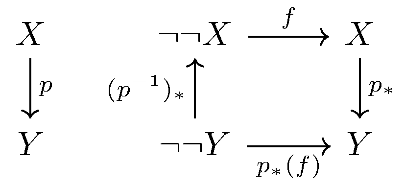

March 10th
Today I learned that the law of the excluded middle fails in homotopy type theory, from the Homotopy Type Theory book of course. Roughly speaking, the law of the excluded middle comes down to $\lnot\lnot A\to\lnot A$ being problematic. How this goes, however, is somewhat intricate. Anyways, we claim the following.
Theorem. We have that \[\lnot\left(\prod_{A:\UU}(\lnot\lnot A\to A)\right).\]
At a high level, this is following from univalence plus fact that our functions, being continuous, must communicate nicely with equality types. In particular, both of these facts talk about how equalities (between types) and functions should interact, and they conspire together to make $\lnot\lnot A\to A$ problematic.
In particular, we will build towards the following.
Lemma. Suppose $f:\prod_{(A:\UU)}(\lnot\lnot A\to A).$ For nonempty equivalent types $X,Y:\UU,$ there are elements $x:X$ and $y:Y$ such that, for any equivalence $e:X\simeq Y,$ we have $e(x)=y.$
This is very strange; essentially, we are forcing equivalences to have "canonical'' choices about where they send elements, and this will prove to lead quickly to contradiction, as we will show later.
Anyways, we promised that univalence and function application would be important, so we should start there. Fix any $e:X\simeq Y,$ we get a witness $p:\equiv\op{ua}(e):X=_\UU Y$ from univalence. Looking at $A\mapsto(\lnot\lnot A\to A)$ as a function family, we get (dependently) apply it to $X=Y$ so that\[\op{apd}_f(p):\op{transport}^{A\mapsto(\lnot\lnot A\to A)}(p)(f(X))=f(Y).\]The image here is that we have a transported map $(\lnot\lnot X\to X)\to(\lnot\lnot Y\to Y)$ because $X=Y,$ and applying dependently means that $f(X)$ pushed along this transport must be equal to $f(Y).$
We note that already we can feel problems brewing: $\op{transport}^{A\mapsto(\lnot\lnot A\to A)}(p)$ is roughly moving along $X\simeq Y,$ but $f(X)$ and $f(Y)$ don't care about the particular path $p$ chosen. To solidify this, we introduce $\hat y:\lnot\lnot Y$ (which exists because $Y$ is nonempty) so that\[\op{happly}(\op{apd}_f(p),\hat y):\op{transport}^{A\mapsto(\lnot\lnot A\to A)}(p)(f(X))(\hat y)=f(Y)(\hat y).\]At this point, both sides of the equality are physical elements of $Y,$ and the rest of this is (admittedly difficult) computation.
Currently, the main monster is the transport, so we focus our efforts there first. Abusing notation, we note that we know how to deal with transports of function type families by writing\[(A\mapsto\lnot\lnot A)\to(A\mapsto A):\equiv A\mapsto(\lnot\lnot A\to A).\]In particular, we have the following commutative diagram of transports.

There is some significant abuse of notation as to what each transport is, but we ignore this. The point is that the function $\op{transport}^{A\mapsto(\lnot\lnot A\to A)}(p)(f(X))$ witnessing $\lnot\lnot Y\to Y$ is propositionally equal to the function first moving the input $\hat y:\lnot\lnot Y$ up to $\lnot\lnot X$ along $p^{-1},$ then moving along $f$ to $X$ and finally moving down $p$ to $Y.$ That is,\[\op{transport}^{A\mapsto(\lnot\lnot A\to A)}(p)(f(X))(\hat y)=\op{transport}^{A\mapsto A}(p)\left(f(X)\left(\op{transport}^{A\mapsto\lnot\lnot A}(p^{-1})(\hat y)\right)\right).\]To continue, we need to use the following technical lemma.
Lemma. For type $A,$ every element of $\lnot A$ is equal.
This follows from function extensionality. Note that for any inhabitants $x,y:0,$ the map $0\to(x=y)$ means that $x$ and $y$ must be equal. So because all elements of $0$ are equal, any maps $f,g:\lnot A\equiv A\to 0$ must be equal on all inputs, so $f=g$ by function extensionality. $\blacksquare$
This is the reason why it matters we are considering $\lnot\lnot A$ instead of some other operation on types: every inhabitant of $\lnot\lnot A$ is equal! In particular, all possible options inhabitating $\lnot\lnot X$ are equal, so all possible\[\hat x:\equiv\op{transport}^{A\mapsto\lnot\lnot A}(p^{-1})(\hat y):\lnot\lnot X\]are equal. Thus, we see\[\op{transport}^{A\mapsto(\lnot\lnot A\to A)}(p)(f(X))(\hat y)=\op{transport}^{A\mapsto A}(p)\left(f(X)(\hat x)\right)\]for any of the equal choices of $\hat x:\lnot\lnot X,$ which follows from function application.
We are done with the hard part of the computation. At this point, we remark that $\op{ua}$ is defined as the quasi-inverse of $\op{transport}^{A\mapsto A}:\prod_{A,B:\UU}(A=B)\to(A\simeq B),$ so in fact $p\equiv\op{ua}(e)$ has\[\op{transport}^{A\mapsto A}(p)(f(X)(\hat x))=e(f(X)(\hat x)).\]Returning to the original equality, we see that\[e(f(X)(\hat x))=f(Y)(\hat y),\]where the choices of $e,\hat x,\hat y$ all do not matter. In particular, all possible $\hat x:\lnot\lnot X$ and $\hat y:\lnot\lnot Y$ are equal, and it must be the case that $e$ sends $x:\equiv f(X)(\hat x)$ to $y:\equiv f(Y)(\hat y)$ (propositionally). This completes the lemma. $\blacksquare$
Returning to the proof of the main theorem, once we fix some $f:\prod_{(A:\UU)}(\lnot\lnot A\to A),$ all it remains to do is exhibit some equivalences which break having "canonical'' elements. For this, we consider autoequivalences, for the reflexive $A\simeq A$ is always inhabited by $\op{id}.$ Running this through the lemma, there are elements $a,a':A$ such that, for any $e:A\simeq A,$ we have\[e(a)=a'.\]However, take $e\equiv\op{id},$ and we are forced into $a=a',$ so in fact every $e:A\simeq A$ has some $e(a)=a$ for our $a:A.$ That is, every equivalence has (the same) fixed point.
However, we can construct autoequivalences with no fixed points. We take $e:2\simeq2$ by\[e(0_2)\equiv1_2\qquad\text{and}\qquad e(1_2)=0_2.\]We note that $e\circ e\sim\op{id},$ so $e$ is its own quasi-inverse and therefore is in fact an equivalence. Just looking at $e$ we see that it has no fixed point, but we'll write out the details. The fixed point of $e$ is propositionally equal to either $0_2$ or $1_2$, so either $1_2\equiv e(0_2)=0_2$ or $0_2\equiv e(1_2)=1_2.$ But we also know\[0_2\ne1_2\equiv(0_2=1_2)\to0,\]and as all the possible fixed points lead to an inhabitant of $0_2=1_2,$ we see that we do indeed get an inhabitant of $0.$ So we are done here. $\blacksquare$
It is somewhat remarkable that exactly what breaks the law of the excluded middle—that we have "nontrivial'' autoequivalences (that is, non-reflexive autoequivalences)—is that $\UU$ does not behave like a (type-theoretic) set. Of course, there is univalence hiding around in the background, for we took advantage of these nontrivial autoequivalences by turning them into nontrivial loops.
We also remark that very little of this proof actually cared about the specific construct $\lnot\lnot A\to A.$ Only the sublemma needed this fact, for we needed to limit what $f(X)(\hat x)$ and $f(Y)(\hat y)$ could look like, and we did this by limiting what $\hat x$ and $\hat y$ could look like. I can't help but feel like this argument has some unused potential by replacing $\lnot\lnot$ with some other type with at most one path-connected component.